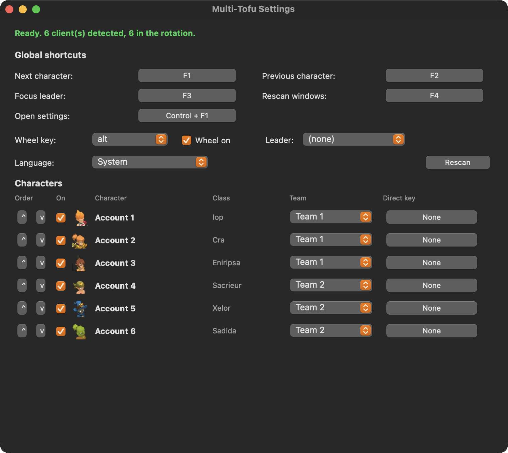

What it does
Instant switch
F1 and F2 walk your rotation, F3 jumps straight back to your leader. One key, no mouse, no Mission Control.
Character wheel
Hold Option and a wheel appears under your cursor with a class icon for every character. Move, release, that client is in front.
Teams
Split your characters into teams and cycle only inside the active one. Useful when you run a dungeon group and leave the rest parked.
Direct keys
Bind one fixed key per character. F5 always goes to your Iop, whatever the rotation is doing.
Real names
Character names are read live from the game window. Nothing to type in, nothing to keep updated.
Four languages
English, French, Spanish and Portuguese, following your system language.
Roles
Tag each character as tank, healer, damage, support or scout and its wheel segment gets a coloured rim. Past five clients you read colour faster than names.
Peek
Hold one key to look at another client, release and you are back where you were, rotation position intact.
Order by number
Type a position to place a character. Sorting a team by initiative is six keystrokes, not twenty arrow clicks.
It stays saved
Order, teams, roles, leader and every shortcut are written to disk as you change them, keyed by character. Come back next week and it is as you left it.
It learns your characters by itself
You never type a character name. Multi-Tofu reads the Dofus window title, so the moment a character logs in their real name appears in the wheel, in the menu bar and in the settings list. A client that is open but still sitting on the login screen has no character on it yet, so it shows as Account 1, Account 2 and so on. Those stay clickable in the menu, so you can jump to one and log it in, but they are kept out of the F1 rotation. A keypress never lands you on a window with no character on it.

Install in about a minute
Download and unzip
Grab the zip from the releases page and drag Multi-Tofu into your Applications folder.
Right click, Open
The app is not signed with a paid Apple developer account, so the first launch needs a right click then Open. After that it opens normally.
Allow Accessibility
macOS asks once. Multi-Tofu needs it to read window titles and to hear your shortcuts. Switch it on and the shortcuts come alive a couple of seconds later, no restart.
Default shortcuts
| Next character | F1 |
| Previous character | F2 |
| Focus leader | F3 |
| Rescan windows | F4 |
| Character wheel | hold Option |
| Peek at another client | hold ` |
| Open settings | Control + F1 |
All rebindable. Shortcuts are stored as physical keycodes, so they keep working if you switch between AZERTY and QWERTY.
It does not automate anything
Multi-Tofu brings windows to the front. That is the whole feature. There is no bot, no packet reading, no memory injection, and no broadcasting one keystroke to several clients at once. Every action still comes from you, in one client at a time. The code is public, so you do not have to take that on trust.
Why this exists
The Windows crowd has Dosoft and Organizer. On a Mac there was nothing, and the closest project was archived in August 2026. Dosoft is Apache 2.0 but built entirely on the Win32 API, so none of it ports. This is a fresh implementation on the macOS Accessibility API, a CGEventTap for the shortcuts, and AppKit for the wheel, reusing the class artwork and the feature design under that licence.
Requirements
- macOS 12 or later
- Dofus 3 (Unity), the client the Ankama Launcher installs
- Apple Silicon or Intel, one universal build
- Windowed or borderless mode, the wheel does not draw over exclusive fullscreen